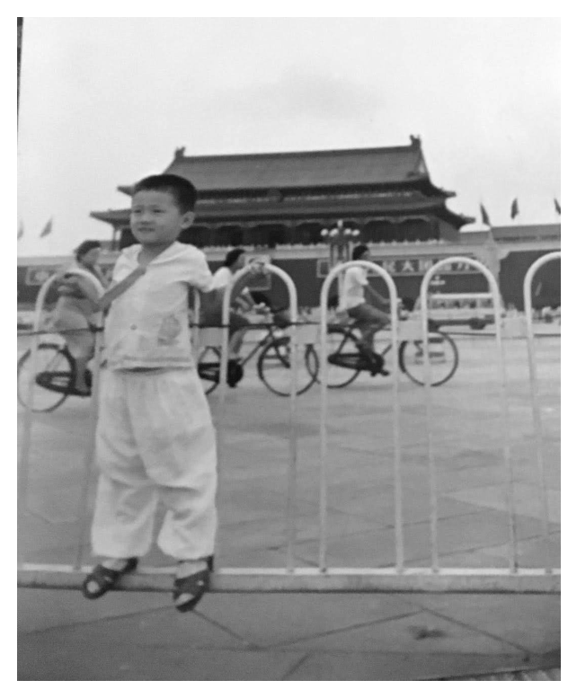
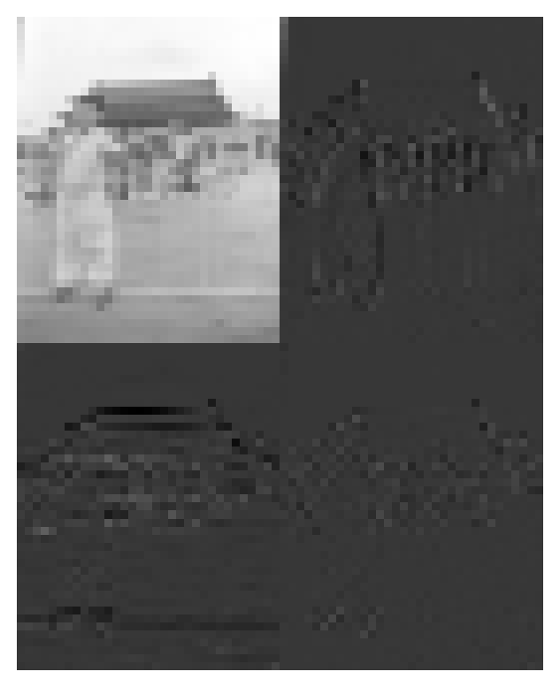
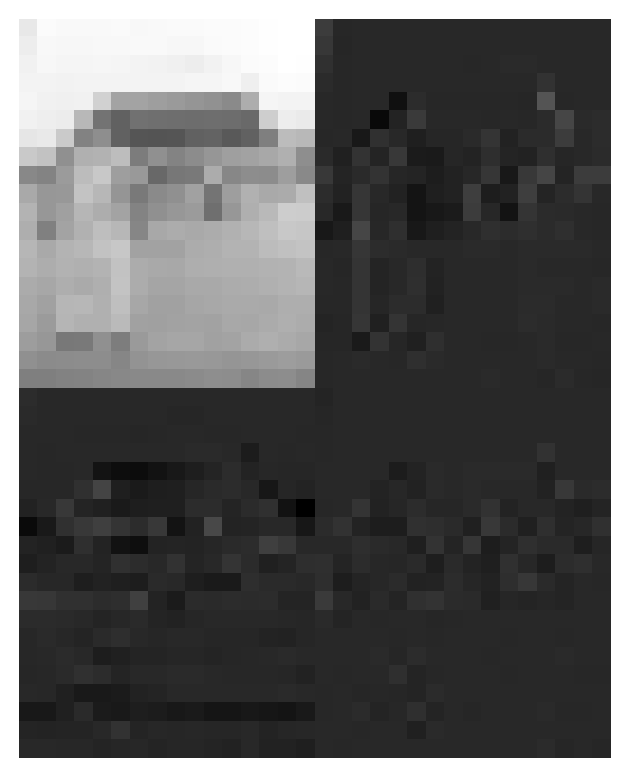
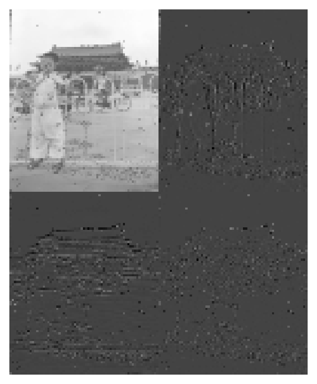
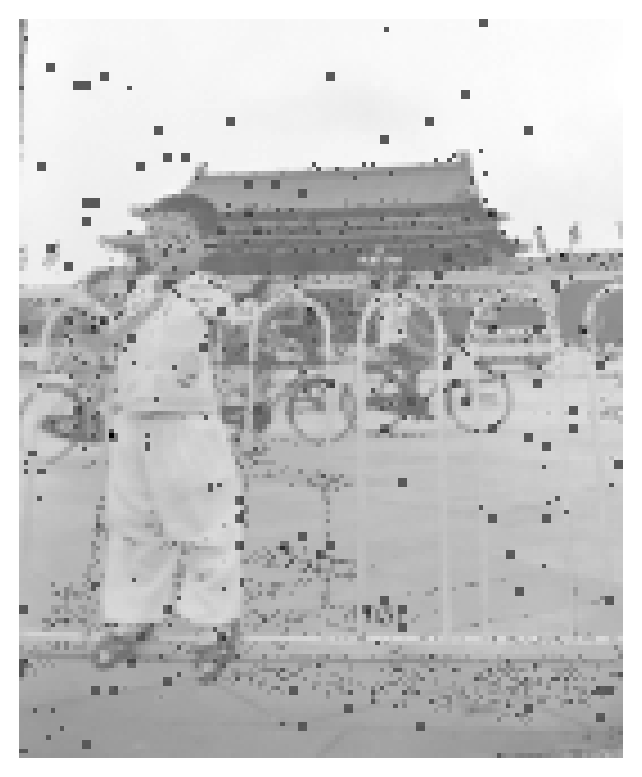
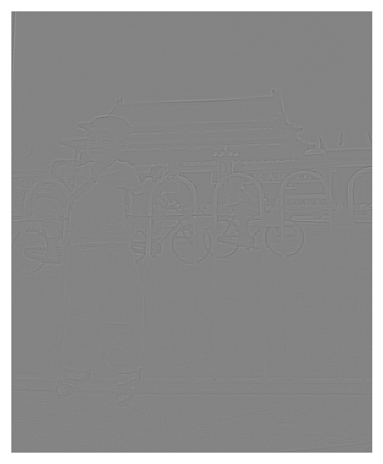

from PIL import Image
import numpy as np
import matplotlib.pyplot as plt
import pandas as pdCode from chatGPT to load in and convert to Grayscale
def load_image_as_numpy_array(filepath):
# Open the image file
with Image.open(filepath) as img:
# Convert the image to grayscale
img_gray = img.convert('L')
# Convert the grayscale image to a numpy array
numpy_array = np.array(img_gray)
return numpy_arrayload the file in and take note of the filesize
filename = 'mypic.png'
raw_matrix = load_image_as_numpy_array(filename)
raw_matrix.shape(1318, 1079)Since Haar-Wavelet requires even dimensions, I will remove the last column
matrix = raw_matrix[:, :-1]
matrix.shape(1318, 1078)More chatGPT code to display an image
def display_image_from_array(image_array):
# Display the numpy array as an image
plt.imshow(image_array, cmap='gray') # 'gray' to specify grayscale display
plt.axis('off') # Turn off axis numbers and ticks
plt.show()This image was taken in my childhood at Tianamen Square not too long after the Tianamen Square Massacre. The railings that I am on did not exist prior to the Tiananmen Square Massacre. I hope you enjoy this snapshot in history.
display_image_from_array(matrix)
The Haar Wavelet function matrix is created here. The loop iterates over half the dimension of the picture and in each iteration the sum and the difference of columns are created. Each iteration creates a row of the sum and difference. At the end the rows are all concatenated together to form a dim x dim matrix.
def make_haar_wavelet(dim):
hwRowsSum = []
hwRowsDiff = []
for i in range(int(dim/2)):
zeros = np.zeros(dim)
zeros[i*2] = 1
zeros[i*2+1] = 1
negs = np.copy(zeros)
negs[i*2] = -1
hwRowsSum.append(zeros)
hwRowsDiff.append(negs)
haar_wavem = np.sqrt(2)/2 * np.concatenate((hwRowsSum,hwRowsDiff))
print(haar_wavem.shape)
return haar_wavemThis function applies the Haar Wavelet transformation and returns the resulting matrix.
def haar_transform(mat):
haar_left = make_haar_wavelet(mat.shape[0])
haar_rite = make_haar_wavelet(mat.shape[1])
haar_mat = haar_left @ mat @ haar_rite.T
return haar_matDisplays the image and crops the image to the blurred image
def show_haar_and_crop(hmat):
display_image_from_array(hmat)
upper_right = hmat.shape[0]//2
lower_left = hmat.shape[1]//2
cropped = hmat[:upper_right,:lower_left]
return croppedLoop over and apply the Haar-Wavelet transform, at each step I take the blurred picture and use that as the input to the next Haar Wavelet transformation. Iteration 4 is the last iteration where I can make out the finer details of the picture such as the bicycles in the background and the Tiananmen Square building. The image has been compressed to be 1/4^4 = 1/256 of the original size.
images = []
images.append(matrix)
full_images = [matrix]
display_image_from_array(matrix)
for i in range(6):
haar_matrix = haar_transform(images[-1])
full_images.append(haar_matrix)
print(f'iteration {i+1}')
images.append(show_haar_and_crop(haar_matrix))
(1318, 1318)
(1078, 1078)
iteration 1
(658, 659)
(538, 539)
iteration 2
(328, 329)
(268, 269)
iteration 3
(164, 164)
(134, 134)
iteration 4
(82, 82)
(66, 67)
iteration 5
(40, 41)
(32, 33)
iteration 6


Here I try a lossy compression by rounding the blurred image to integers and then converting the least frequent 10 values into 0’s. The results weren’t that great as the image suffered in quality without that many values converted to 0’s. The rounding looks like it does save space without compromising the quality of the image by much.
def round_to_zero(image):
rounded = np.round(image).astype(np.uint8)
least = pd.Series(rounded.reshape(-1)).value_counts().iloc[-10:].index.values
to0 = np.isin(rounded,least)
num = to0.sum().sum()
print(f'number converted: {num}')
print(f'{num / image.size} converted to 0')
image[to0] = 0.0
return imageimages2 = []
images2.append(matrix)
full_images2 = [matrix]
display_image_from_array(matrix)
for i in range(4):
haar_matrix = haar_transform(images2[-1])
full_images2.append(haar_matrix)
print(f'iteration {i+1}')
cropped = show_haar_and_crop(haar_matrix)
haar_rounded = round_to_zero(cropped)
images2.append(haar_rounded)
(1318, 1318)
(1078, 1078)
iteration 1
number converted: 3895
0.010965622281468803 converted to 0
(658, 659)
(538, 539)
iteration 2
number converted: 1780
0.020112767087377543 converted to 0
(328, 329)
(268, 269)
iteration 3
number converted: 226
0.01028394612304332 converted to 0
(164, 164)
(134, 134)
iteration 4
number converted: 98
0.017837641062977794 converted to 0
Reverse Haar here for comparison between iteration with rounding and without
def reverse_haar(mat):
if mat.shape[0] %2 == 1:
mat = mat[:-1,:]
if mat.shape[1] % 2 == 1:
mat = mat[:,:-1]
haar_left = make_haar_wavelet(mat.shape[0])
haar_rite = make_haar_wavelet(mat.shape[1])
haar_mat = 2* haar_left.T @ mat @ haar_rite
return haar_mat
display_image_from_array(reverse_haar(full_images[4]))(164, 164)
(134, 134)display_image_from_array(reverse_haar(full_images2[4]))(164, 164)
(134, 134)
It looks like it might be better to just do additional iterations rather than rounding too much.
I will attempt to do edge detection from the example in the book. First do the Haar transformation, then 0 out the blurred image. Then do the inverse transformation
def edge_detection(mat):
haar_left = make_haar_wavelet(mat.shape[0])
haar_rite = make_haar_wavelet(mat.shape[1])
hmat = haar_left @ mat @ haar_rite.T
# zero out
upper_right = hmat.shape[0]//2
lower_left = hmat.shape[1]//2
hmat[:upper_right,:lower_left] = 0
# inverse transformation
Ae = 2 * haar_left.T @ hmat @ haar_rite
return AeA_edges = edge_detection(matrix)
display_image_from_array(A_edges)(1318, 1318)
(1078, 1078)
You’ve done the first part really nicely. The effects of the compression are very clear.
You came close with your edge detection, but then you gave up! I checked what was happening by plotting a histogram of the values in A_edges. I saw that many of them were negative, so then I tried making plots of the absolute value of A_edges. Using imshow directly, I could set the vmin and vmax values to show everything more clearly; also, I found it easier to see when I used cmap='hot'.
Also: when you do the rounding to 0, the idea is to do that on the portions of the image which contain the edge information, not on the blurred part of the image. That’s because the edge information parts are the ones which should have the most values that are close to zero… then once you have the zeros, you could try saving at least those parts of the matrix as sparse matrices, to see if that helps with the compression.
Grade: M
Wow, thank you indeed for sharing this!